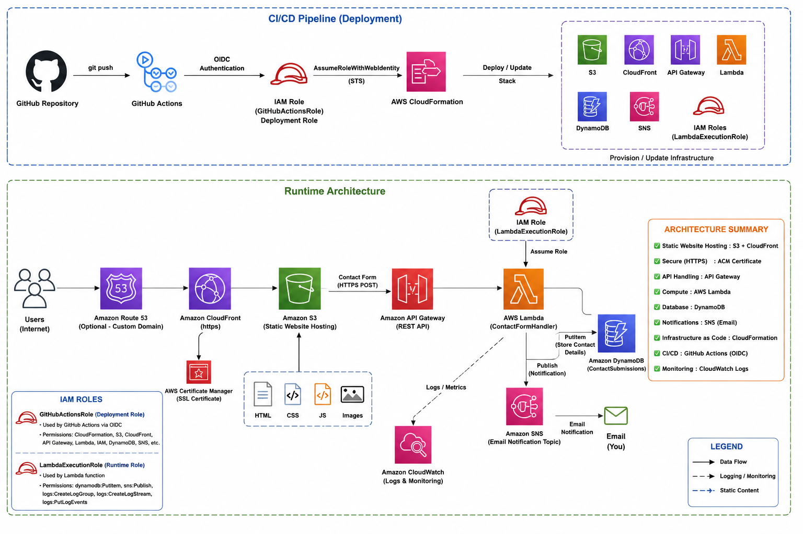
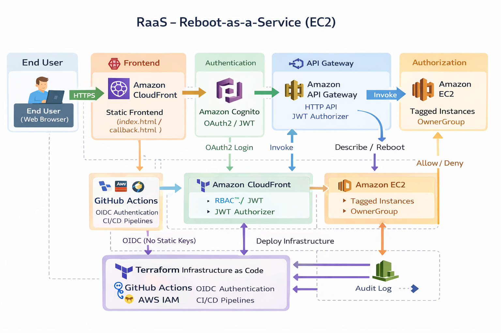

Project #1: My Portfolio Website
This is a static website hosted on AWS S3 and AWS Amplify with a contact form connected via API Gateway, Lambda, and DynamoDB. The entire setup uses Infrastructure as Code (IaC) with CloudFormation and features a CI/CD pipeline automated using GitHub Actions.
Architecture Overview
This portfolio is built on a fully serverless AWS architecture. The frontend is hosted on Amazon S3 and securely delivered worldwide through Amazon CloudFront over HTTPS. The contact form is powered by Amazon API Gateway and AWS Lambda, which validates and processes incoming requests before storing the data in Amazon DynamoDB and sending real-time email notifications through Amazon SNS. The entire infrastructure is provisioned using AWS CloudFormation and deployed automatically through GitHub Actions with OIDC authentication, while Amazon CloudWatch provides centralized logging and monitoring.

Technologies Used
- AWS Services: AWS S3, Cloud Front, API Gateway, Lambda, DynamoDB, SNS, CloudFormation, IAM, CloudWatch
- CI/CD and IaC: GitHub Actions, GitHub workflow and Cloud Formation
- Version Control: Git, GitHub
- Frontend: HTML, Tailwind CSS, JavaScript
Features
- Used feature of S3 + CloudFront distribution to get the HTTPS fuctionality.
- Static website hosting with high availability.
- Serverless contact form with data persistence.
- Real-time email notifications on form submission.
- Infrastructure as Code (IaC) for consistent deployments.
- Automated CI/CD pipeline for both frontend and backend.
Future Enhancements
- Integrate a blog section with content hosted on DynamoDB.
- Implement a CI/CD pipeline for the blog content.
- Add a custom domain with Route 53 and CloudFront.
Project #2: RaaS (Reboot As A Service)
RaaS (Reboot-as-a-Service) delivers secure, self-service EC2 reboots using OAuth2 with Amazon Cognito and ABAC enforced in Lambda via Cognito groups and EC2 tags.
It addresses real enterprise challenges including JWT authorizers, API Gateway and CloudFront integration, CORS handling, and Terraform edge cases.
Architecture Diagram and Overview
RaaS is built on a serverless AWS architecture using Amazon Cognito for OAuth2-based authentication, API Gateway and Lambda for secure backend automation, and ABAC enforced through Cognito group claims and EC2 tags. The frontend is hosted on Amazon S3 and delivered securely over HTTPS via CloudFront, while infrastructure and deployments are managed using Terraform and GitHub Actions with OIDC.

Technologies Used
- AWS Services: Amazon Cognito (User Pools), API Gateway (HTTP API), Lambda, EC2, S3, CloudFront, IAM, CloudWatch, OAuth2, JWT, RBAC, ABAC (Cognito groups + EC2 tags)
- CI/CD and IaC: GitHub Actions (OIDC-based CI/CD), Terraform (IaC)
- Version Control: Git, GitHub
- Frontend: HTML, JavaScript (static web app)
Key Features
- Secure self-service EC2 reboots without AWS Console access
- OAuth2 authentication with Amazon Cognito
- RBAC and ABAC enforced using Cognito groups and EC2 tags
- Serverless API powered by API Gateway and AWS Lambda
- HTTPS frontend delivered via CloudFront and S3
- Automated infrastructure and deployments with Terraform and GitHub Actions
Future Enhancements
- Multi-account and multi-region EC2 support
- Automated group creation and dynamic role mapping
- Automatic EC2 tagging to eliminate manual ownership configuration
- Approval-based workflows for sensitive actions
- Scheduled and automated reboot operations and enhanced auditing
- Custom domain support with ACM and Route 53
```html
Project #3: RaaS 2.0 (Reboot As A Service - Kubernetes Edition)
RaaS 2.0 is the cloud-native evolution of the original serverless RaaS platform. The application is re-architected to run on Kubernetes, replacing AWS Lambda with containerized microservices while preserving secure, self-service EC2 management through OAuth2 authentication, RBAC, and ABAC authorization. The platform demonstrates modern DevOps practices including containerization, Kubernetes orchestration, Infrastructure as Code, GitOps-ready deployments, and centralized observability.
Architecture Diagram and Overview
RaaS 2.0 follows a cloud-native Kubernetes architecture where users authenticate through Amazon Cognito before securely accessing containerized backend APIs exposed via a Kubernetes Ingress Controller. API requests are authorized using RBAC and ABAC based on Cognito group claims and EC2 resource tags. Background worker services execute AWS SDK operations against Amazon EC2, while Redis is used for asynchronous job processing. Infrastructure provisioning is automated through Terraform and GitHub Actions using OIDC authentication, with Prometheus, Grafana, and CloudWatch providing end-to-end monitoring and observability.

Technologies Used
- AWS Services: Amazon Cognito, EC2, IAM, CloudWatch, AWS SDK
- Container Platform: Docker, Kubernetes, Ingress Controller
- Application: Containerized API Service, Worker Service, Redis Queue
- Observability: Prometheus, Grafana, CloudWatch
- CI/CD & IaC: GitHub Actions (OIDC), Terraform
- Version Control: Git, GitHub
Key Features
- Cloud-native Kubernetes architecture
- Dockerized API and Worker services
- OAuth2 authentication with Amazon Cognito
- RBAC and ABAC authorization using Cognito groups and EC2 tags
- Asynchronous job execution using Redis
- Kubernetes Ingress for secure API exposure
- Automated infrastructure deployment using Terraform and GitHub Actions
- Centralized monitoring with Prometheus, Grafana, and CloudWatch
Future Enhancements
- GitOps deployment using Argo CD
- Horizontal Pod Autoscaler (HPA)
- Multi-cluster and multi-region deployment
- Approval-based operational workflows
- Amazon EKS production deployment
- Distributed tracing using OpenTelemetry
```